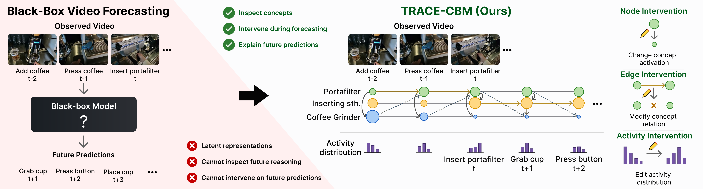
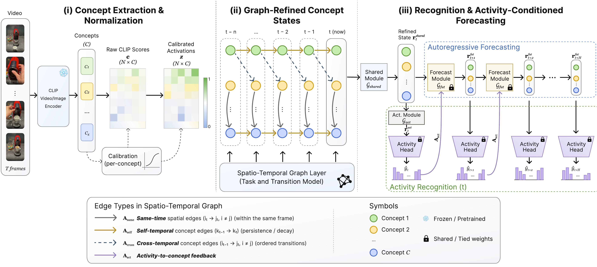
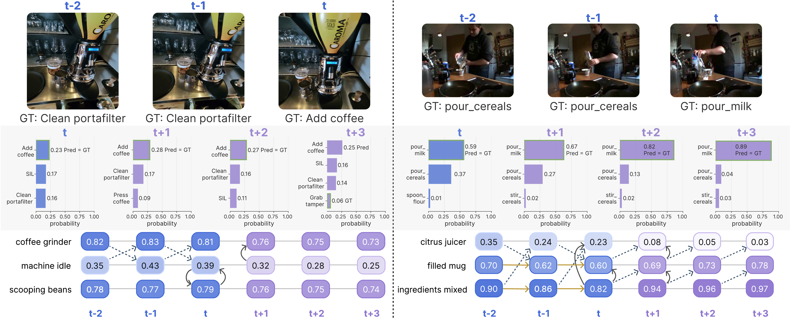
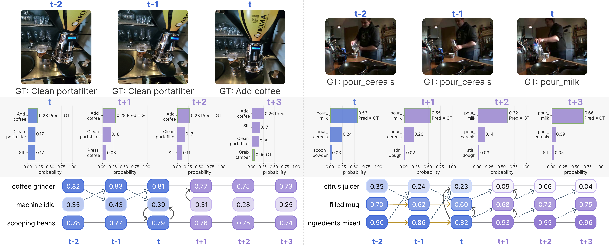
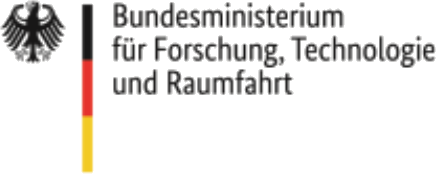

NeurIPS 2026 Workshop on Foundation Models for Temporal Systems
1Technische Universität Clausthal ·
2Technische Universität Darmstadt ·
3Università della Svizzera italiana
4Ludwig-Maximilians-Universität München, MCML ·
5Max Planck Institute for Informatics (SIC)
Black-box forecasters roll out opaque latents. TRACE rolls out named concept states, so a forecast can be inspected, explained, and edited at any horizon.
Abstract
Concept bottleneck models route predictions through human-understandable concepts, making their intermediate states inspectable and editable. Extending this model family to forecasting requires modeling how concept activations evolve over time as objects, actions, and their interactions change, yet existing CBMs ground concepts only in observed inputs and do not forecast their future evolution.
We study this problem using videos of ongoing activities and forecast future activities through a named-concept state. We propose TRACE-CBM (Temporal Relational Activity Concept Evolution), which first refines observed concept activations with sparse spatio-temporal graphs. It then recursively predicts future concept states, conditioning each transition on the prior activity distribution, and decodes both observed and predicted states with a shared activity classifier. At inference time, the model supports editing concept values, activity activations, and learned edges without parameter updates, exposing the relational spatio-temporal dependencies used for forecasting.
Across multiple datasets, TRACE improves observed-activity Top-1 accuracy over concept-based methods by 1.2–8.5 percentage points and attains H3 forecast Top-1 accuracy within 1.9–2.2 points of matched black-box forecasters. Intervention experiments show concept-node edits correct 25.6–34.4% of initially incorrect H3 forecasts without flipping initially correct ones, and concept steering achieves the requested target activity in up to 90.0% of cases.
At a glance

Method
Click a stage in the figure (or a card below) to see what it does and the equation behind it. Every state, observed or forecast, lives in the same C-dimensional space of human-readable concepts and is decoded by the same linear activity head.

Interactive
Edit the concept state at the current window t, flip a learned relation, or overwrite the activity belief, and watch the t+1…t+3 forecast re-roll. The two examples are the sequences from Figure 3 of the paper.
Results
Every number from the paper's tables, switchable by dataset and metric. Hover a bar for the exact mean ± standard deviation, or expand the table below each chart.
Qualitative
Observed windows, activity distributions decoded from refined and forecasted concept states, and the learned relations the model used. Unlike an opaque latent trajectory, the future stays readable through named concepts, activity beliefs, and graph dependencies.


Citation
@inproceedings{knab2026trace,
title = {Intervenable Concept Dynamics for Video Activity Forecasting},
author = {Knab, Patrick and Steinmann, David and De Felice, Giovanni and Divo, Felix and Schlegel, Udo and Stammer, Wolfgang and Marton, Sascha and Bartelt, Christian},
booktitle = {NeurIPS 2026 Workshop on Foundation Models for Temporal Systems},
year = {2026}
}Acknowledgments
This research was supported in part by the German Federal Ministry for Economic Affairs and Climate Action of Germany (BMWK) and by the German Federal Ministry for Research, Technology, and Space (BMFTR). GDF acknowledges support from the Swiss National Science Foundation (SNSF) through the grant 205121_197242 for the project “PROSELF: Semi-automated Self-Tracking Systems to Improve Personal Productivity”, and by the Hasler Foundation through the project “Towards Scalable Multimodal Causal Deep Learning” (grant ID 2024-05-15-70). The project was further supported by the “ML2MT” project from the Volkswagen Stiftung, by the German Research Foundation (DFG) under Germany’s Excellence Strategy (EXC 3066/1 “The Adaptive Mind”, Project No. 533717223) and by the EU-funded “TANGO” project (EU Horizon 2023, GA No 57100431). It has benefited from the HMWK project Hessian.AI, the Cluster of Excellence “Reasonable AI” funded by the DFG under Germany’s Excellence Strategy EXC-3057 and the GRK 2853 “Neuroexplicit Models of Language, Vision, and Action” (Project No. 471607914).
